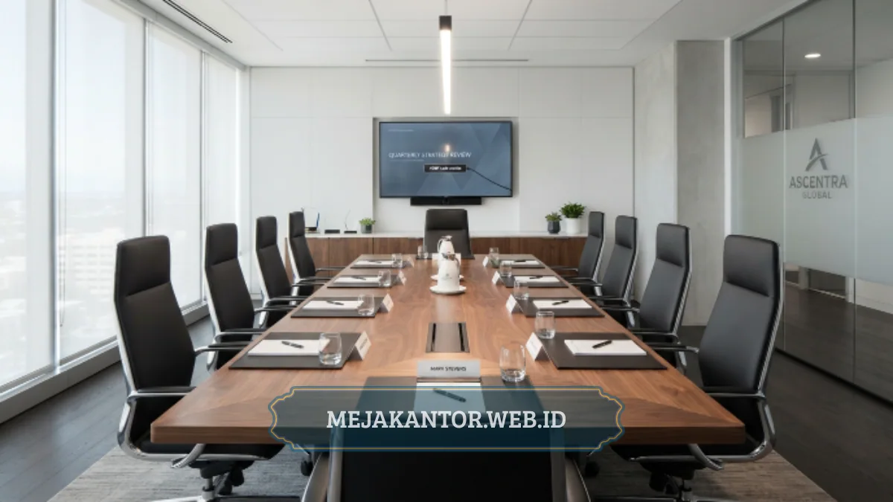

Ukuran meja rapat ideal untuk kapasitas 10 sampai 12 orang umumnya berkisar antara 300 cm hingga 360 cm untuk panjang, dengan lebar sekitar 120 cm hingga 140 cm agar setiap orang memiliki ruang gerak yang cukup.
- Standar jarak per orang di meja rapat sekitar 60 cm hingga 75 cm.
- Panjang meja dihitung dari jumlah kursi per sisi dikali jarak standar per orang.
- Lebar meja perlu mempertimbangkan jangkauan tangan dan penempatan perangkat.
- Bentuk meja rectangular paling umum digunakan untuk kapasitas 10-12 orang.
- Ruang gerak minimal di sekeliling meja sebaiknya tidak kurang dari 90 cm.
Daftar Isi Artikel
Bagaimana Rumus Dasar Menghitung Ukuran Meja Rapat?
Rumus dasar menghitung ukuran meja rapat adalah jumlah kursi per sisi dikalikan jarak standar per orang, kemudian ditambah ruang cadangan di kedua ujung meja untuk kenyamanan tambahan.
Sebagai gambaran, jika satu sisi meja diisi 5 hingga 6 kursi dengan jarak sekitar 60 cm per orang, maka panjang satu sisi meja saja sudah membutuhkan sekitar 300 cm hingga 360 cm, belum termasuk ruang di kedua ujung meja jika ada kursi tambahan di sana.
Perhitungan ini bersifat estimasi umum dan sebaiknya disesuaikan kembali dengan model kursi yang digunakan, karena kursi rapat dengan sandaran tangan (armrest) biasanya membutuhkan jarak sedikit lebih lebar dibanding kursi standar tanpa armrest.
Berapa Ukuran Meja Rapat yang Disarankan untuk 10 Orang?
Ukuran meja rapat yang disarankan untuk kapasitas 10 orang adalah panjang sekitar 300 cm dengan lebar 120 cm, dengan asumsi 5 kursi ditempatkan di masing-masing sisi panjang meja.
Konfigurasi ini umumnya cukup nyaman untuk ruang rapat berukuran sedang, asalkan ruang gerak di sekeliling meja tetap dijaga minimal 90 cm agar kursi dapat ditarik dan orang dapat berjalan tanpa terhalang.
Jika ruang rapat juga difungsikan sebagai ruang presentasi, sebaiknya sisakan ruang tambahan di salah satu ujung meja untuk penempatan layar atau perangkat proyeksi agar tidak mengganggu kenyamanan peserta rapat.

Bagaimana Jika Kapasitas Ditingkatkan Menjadi 12 Orang?
Jika kapasitas ditingkatkan menjadi 12 orang, ukuran meja rapat idealnya bertambah menjadi sekitar 340 cm hingga 360 cm dengan lebar tetap 120 cm hingga 140 cm, tergantung apakah tambahan kursi ditempatkan di sisi panjang atau di ujung meja.
Ada dua pendekatan umum yang dapat dipilih:
- Menambah panjang meja: Mempertahankan penempatan kursi hanya di kedua sisi panjang meja (6 kursi per sisi).
- Menambahkan kursi di ujung meja: Menempatkan 1 kursi di masing-masing ujung meja tanpa menambah panjang secara signifikan, dengan syarat lebar meja di area ujung mencukupi.
Pemilihan pendekatan sebaiknya disesuaikan dengan bentuk dan luas ruangan yang tersedia, karena menambah panjang meja secara berlebihan justru dapat mempersempit ruang gerak jika ruangan tidak cukup luas.
Apa Saja Faktor Lain yang Memengaruhi Ukuran Meja Rapat?
Faktor lain yang memengaruhi ukuran meja rapat selain jumlah orang antara lain kebutuhan perangkat elektronik di meja, model kursi yang digunakan, serta fungsi tambahan ruangan seperti presentasi atau video conference.
Beberapa pertimbangan tambahan yang perlu diperhatikan:
- Kebutuhan ruang untuk laptop, dokumen, dan perangkat conference call di setiap posisi duduk.
- Jenis kursi, apakah menggunakan armrest atau tidak, karena memengaruhi jarak bebas antar kursi.
- Kebutuhan jalur kabel management tersembunyi (socket box/pop-up outlet) untuk perangkat elektronik di tengah meja.
- Fungsi tambahan ruangan, misalnya sebagai ruang presentasi yang membutuhkan ruang kosong di salah satu sisi dinding depan.
Ruang rapat yang direncanakan bersamaan dengan pengadaan meja direktur biasanya lebih efisien dari sisi anggaran dan gaya desain, karena kedua furniture ini dapat disesuaikan dari sisi material dan warna agar tampak konsisten.
Menghitung ukuran meja rapat ideal untuk kapasitas 10 sampai 12 orang perlu mempertimbangkan jarak standar per orang, model kursi, serta fungsi tambahan ruangan. Gunakan estimasi panjang 300-360 cm dan lebar 120-140 cm sebagai acuan awal, lalu sesuaikan kembali dengan pengukuran langsung di ruangan sebelum melakukan pemesanan.
Konsultasikan Ukuran & Desain Meja Rapat Anda
Dapatkan simulasi layout 2D/3D gratis dan rekomendasi meja rapat custom sesuai luas ruangan kantor Anda.
Konsultasi via WhatsApp 0889-8964-3555
Mega Anggun
Penulis Konten & Spesialis Penataan Interior Kantor. Berpengalaman dalam memberikan tips ergonomi dan memilih furnitur terbaik untuk menunjang produktivitas kerja.